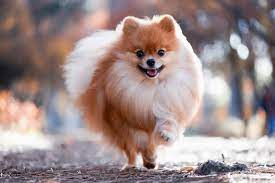

El Pomeranian son fácilmente reconocidos por su esponjoso doble manto y su cara de zorro con orejas erguidas.
La forma del cuerpo es ligeramente cuadrado, y su cola esponjada se riza sobre su espalda.
Un collar grueso alrededor del cuello completa su foto de un perro de que puede manejar las nieves de
la Alemania del norte. La cabeza es de alguna manera redonda con un hocico distinto.
